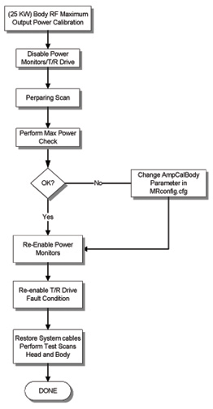

- 00000018WIA301B9E20GYZ
- id_131067563.0
- Aug 29, 2019 1:43:45 AM
Eclipse 2 Body 25 KW Max Power Setup and Cal
Prerequisites
| Required persons | Preliminary requirements | Procedure | Finalization |
|---|---|---|---|
| 1 | Not Applicable | 45 minutes | Not Applicable |
| Item | Quantity | Effectivity | Part number | Manufacturer |
|---|---|---|---|---|
| 10 inch Crescent Wrench | 1 | - | - | - |
| Power Measurement Kit (Wattmeter Kit) | 1 | - |
2372868 | - |
| ||||||||||||||||
About this task
This procedure calibrates the Body Mode of the 25KW RF Amplifier (Illustration 1) to 25KW, using the power Measurement Kit (Wattmeter).


| Last Update | 01/17/2005 |
2 DISABLING T/R DRIVE ERROR CONDITION
Procedure
- On the front of the Driver Module, disable T/R error reporting by setting
the TR switch to the RT DISABLE (disable faults) position. Figure 3.
Figure 3. DRIVER MODULE SWITCH  Note:
Note:HV, DD and MC should remain set to Enable.
Setting up the RF Coupler
Procedure
Insert the 50KW Element into the Forward Sensor Port. (Blue- 4300A374-3) Make sure the arrow on the element points in the direction of the arrow (from Input to Output) on the Sensor. Lock Element in place using the locking tab on the sensor. (Figure 4)Notice Figure 4. RF COUPLER SETUP FOR BODY MODE 
Wattmeter and Dummy Load Setup
Procedure
Warning 
Verify scanner is in “idle”, turn off RF Enable at the Exciter (FP-I/O) or disconnect J14 RF Drive Input) from the back of the RF amplifier.Notice
Wattmeter introduction
Procedure
Setting Up The Wattmeter to Measure Forward Body Maximum Power
Procedure
- Verify it reads “43”. If not, type
the number “43” followed by the Enter button.
(Figure 8 shows what should
be displayed at this time).Note:
This action displays the Sensor Type configured in the Wattmeter. This procedure uses Sensor ” Type 43”, which is optimized for peak power measurement.
Figure 8. WATTMETER DISPLAY SET TO READ PEAK POWER SENSOR 
Setting ampCalHead and ampCalBody Factors to Zero (0)
Procedure
Scan Setup
Procedure
Adjusting the RF Amplifier Output Power (Body)
Procedure
- Select Manual Prescan.
- Select Scan TR
- Set the Transmit Gain to 50. Make sure everything is functioning normally and you are getting a reading on the Wattmeter.
- Set the Transmit Gain to 180. Make sure everything is functioning normally and you are getting a reading on the Wattmeter. Allow scanner to pulse at TG 180 for 6 minutes. This is due to the drop in gain that occurs over the 6 minute period.
- Slowly increase the TG towards 200 while watching
the wattmeter. DO NOT EXCEED 25KW.
- If 25KW (+/- 1KW) is reached at a TG of 200 then no further adjustment is necessary. Reduce TG to zero and proceed to section 5 Finalization.
- If the amplifier trips out before 25KW (+/- 1KW) is reached, the output is out of specification. Proceed to the following Section, (ADJUSTMENT OF THE BODY AMPCALBODY FACTOR)
- If the amplifier reads less than 25KW at a TG of 200, then check the Appendix A for troubleshooting suggestions.
ADJUSTMENT OF THE BODY AMPCALBODY FACTOR
Procedure
Adjusting the ampCalBody Setting
Procedure
- Select the Service Desktop Manager. (Tools Menu)
- Select Utilities
- Select Config File Manager
- Select Start
- Select MR Config File
- Find the ampCalBody parameter in the Mrconfig.cfg file.
- Change the ampCalBody value to the New ampCalBody value calculated in Table 5.
- Select Quit. (To save the new value)
- When asked to really quit, select YES.
- After updating the file, go to top of window and select File and then Save.
- Select Quit.
- Reboot Signa
- The software uses the new ampCalBody value to match TG and maximum output of amplifier at 25KW.
- Check the new ampCalBody value by repeating Adjusting the RF Amplifier Output Power (Body).
- Repeat Adjusting the RF Amplifier Output Power (Body) and ADJUSTMENT OF THE BODY AMPCALBODY FACTOR until the ampCalBody factor is set.
Further Troubleshooting
Procedure
- To further troubleshoot with the On Line Center and/or Milwaukee Engineering,
complete RF Power Calibration procedure now, and when it becomes possible
to perform SPT do so. Note the TG levels reported by SPT for both Head and
Body. Report these values back to the OLC or Service Engineering. With these
values it will help determine the proper course of action.
Figure 10. CABLE PATH UCERD TO RF AMPLIFIER 
Finalization
Procedure
- Verify scanner is in “idle”, turn off RF Enable at the Exciter (FP-I/O Board) or disconnect J14 from the back of the RF amplifier.
- Disconnect the Power Measuring equipment from the system.
- Connect the Original Body Output Cable to the bottom of the RF Coupler at the back of the RF Amplifier, J4.
- Connect the Original Head Output Cable to the bottom of the RF Coupler at the back of the RF Amplifier, J3.
- Re-enable RF Enable at the Exciter (FP-I/O Board) or reattach the RD Drive Cable to J14 at the rear of the RF amplifier.
- Re-Enable TR error reporting by enabling the TR switch on the front of the Driver Module. See Figure 3.
- Replace all covers.